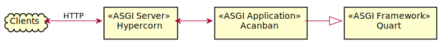
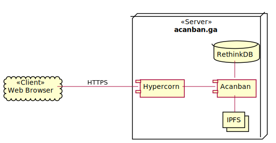

System Architecture¶
As previously mentioned, Acanban implements an ASGI application. The general architecture is illustrated in Figure 1.

Figure 1 Acanban’s role in the Asynchronous Server Gateway Interface¶
All the data and business logic handling is done on the server side in order to reduce workload for the clients, and thus the details involving the clients are not discussed in this section. Requests to and responses from the ASGI application are transfered through the ASGI server 1 Hypercorn. Typically, these messages are encrypted via TLS/SSL 2.
Persistency layers are provided by separate servers, which in our case are deployed on the same machine as the ASGI server and application. This has the following benefits:
The network latency is significantly lower within a machine.
We are spared from concerning with various security measures that would have been necessary were these servers are exposed to the Internet.
It is more economic to maintain fewer physical (or virtual) machines.
While files uploaded by the users and generated by the system are stored in IPFS, other data are managed by RethinkDB. With these components, our test server, which is registered under the domain of acanban.ga, has the top-level view described in Figure 2.

Figure 2 Deployment architecture¶
As both IPFS and RethinkDB are designed to be distributed and the HTTP is distributed by nature, it is straightforward to scale the system. A load balancer such as nginx can be added to distribute the requests to multiple Acanban instances as is shown in Figure 3. IPFS and RethinkDB can also be run as clusters.
![@startuml
cloud "Web Browser" as Browser << Client >>
node nginx << Load Balancing Server >>
node "Web Server" as server {
component Acanban as acanban
component Hypercorn as hypercorn
}
node "Database cluster" as db {
database "RethinkDB" as r_1
database "RethinkDB" as r_2
database "RethinkDB" as r_3
database "RethinkDB" as r_4
}
node "IPFS cluster" as ipfs {
collections "IPFS" as i_1
collections "IPFS" as i_2
collections "IPFS" as i_3
collections "IPFS" as i_4
}
nginx "0..*" --- "1" Browser : HTTPS
nginx "1" -[norank]- "1..*" hypercorn
hypercorn "1" -- "1" acanban
acanban "1..*" -- "1..*" db
acanban "1..*" -- "1..*" ipfs
@enduml](../_images/plantuml-50aa0f0b72474d8149d708cbe4e1db1705792218.svg)
Figure 3 Alternative architecture with load balancer¶
However, we do not implement this architecture within the scope of this project, due to following reasons:
We do not have several servers to implement.
For intended use, the expected requests can go up to as many as 1000. Load balancing for such few requests is overhead.